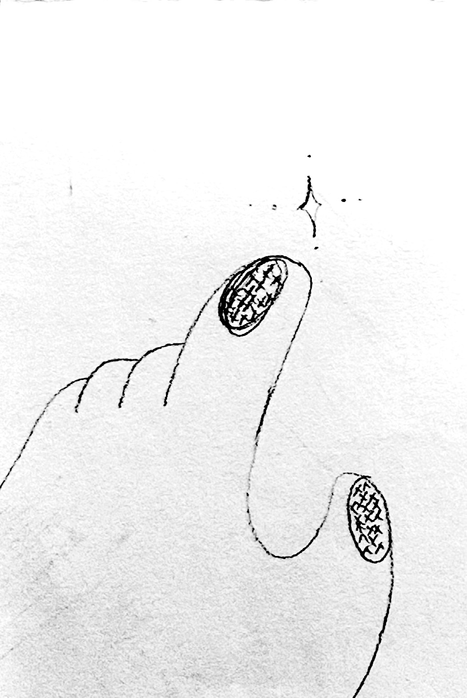

My prompt was "make it a ascii hand reaching towards an ascii star".
I purposefully made it a simple prompt as I didn't want to use over-complicated explanations that would've made
the end-result a bit farther than what I would've initially wanted. As you can see, the hand ascii didn't really pan out the
way I wanted it to, with it looking a bit unrecognizable towards the end.

This was how I actually wanted the website to look like, with a hand graphic (that's been dithered), reaching towards a star
that sits in the middle, that would eventually lead to another page with all the projects inside. This experiment allowed me to understand
what limitations AI had, and how creativity is still an asset that stays useful. Even though I was hoping it wouldn't make exactly what I wanted,
I was still hoping that it would cut some corners and help me code out what I would've initially wanted. Irregardless, I admit that completely avoiding
AI is unreasonable. It's being implemented into the workflows of a lot of companies, thus getting more normalized. With that, I'd have to get a bit more
comfortable using it here and then, but I'd still want to learn through it.